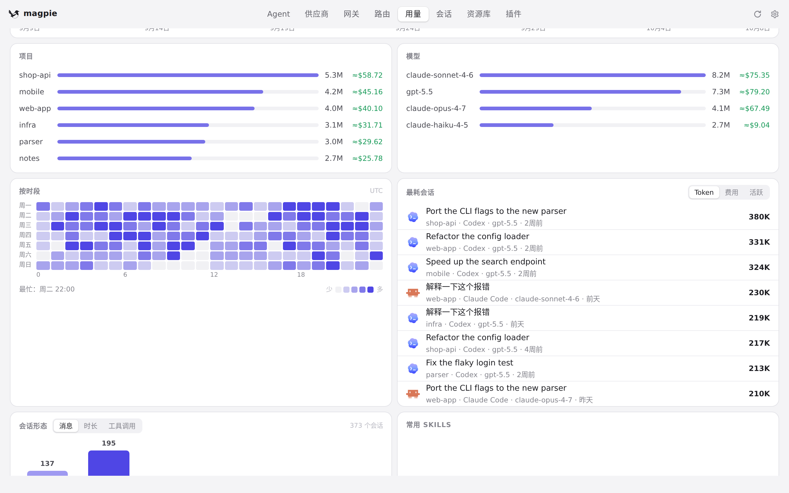
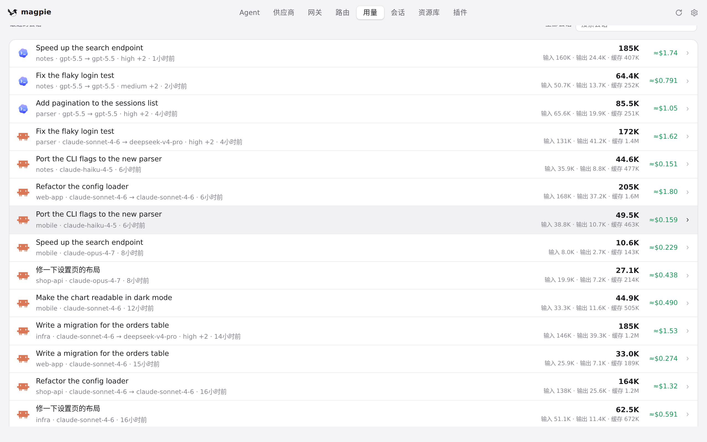
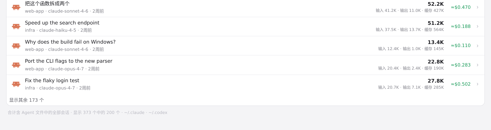

#1251 界面预览
commit fcab202 · 回到 PR · 用量页「会话」页签的列表不再按会话文件最后一行的时间去猜区间，而是按 stats 返回的 keys（区间内真正有工作的会话 agent:id）来画行；同时 stats 把「说过话但没花 token」的会话也算作区间内有工作，于是 KPI、列表注脚与列表行数三者一致。
红线是鼠标走过的轨迹，红色圆环是一次点击；底部文字是这一步在做什么。空格暂停，← → 逐段查看。

「会话」页签：会话数、行数与注脚 · 「会话」页签：上面的会话数、列表的行数与列表下方的注脚

「会话」页签：会话数、行数与注脚 · 列表里的会话行

「会话」页签：会话数、行数与注脚 · 列表下方的注脚